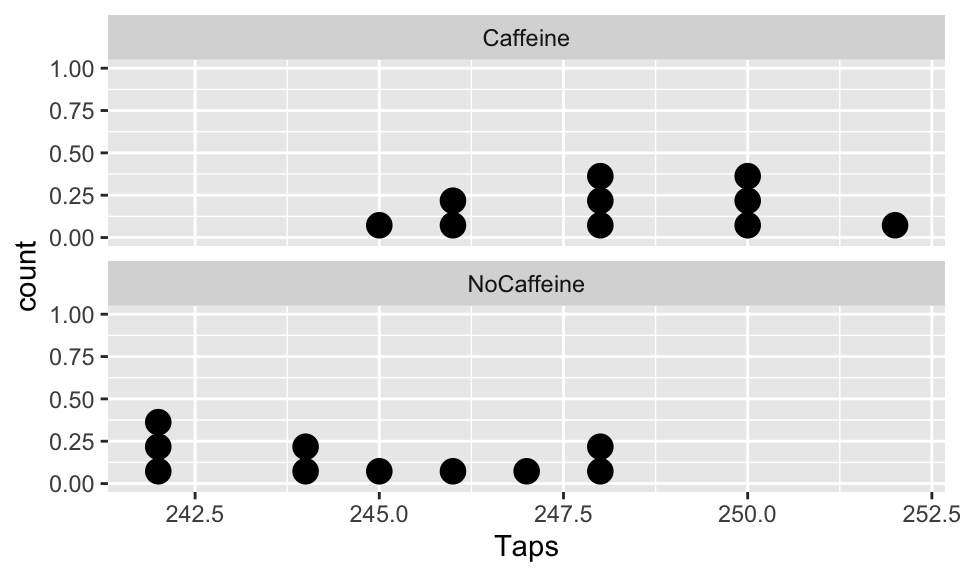
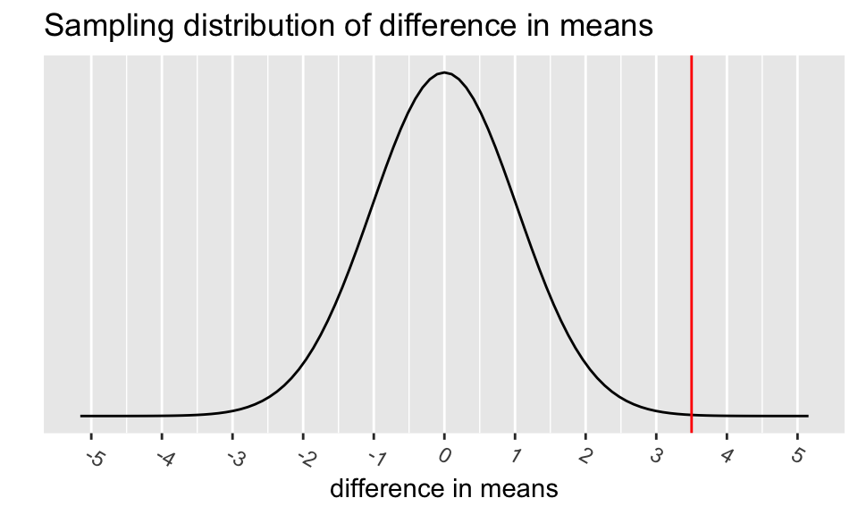
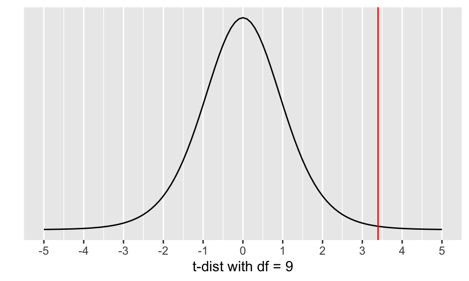
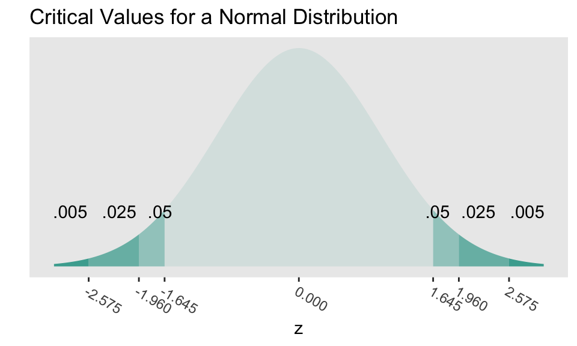
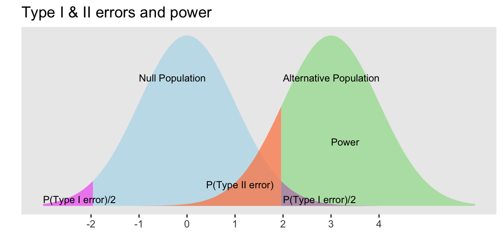
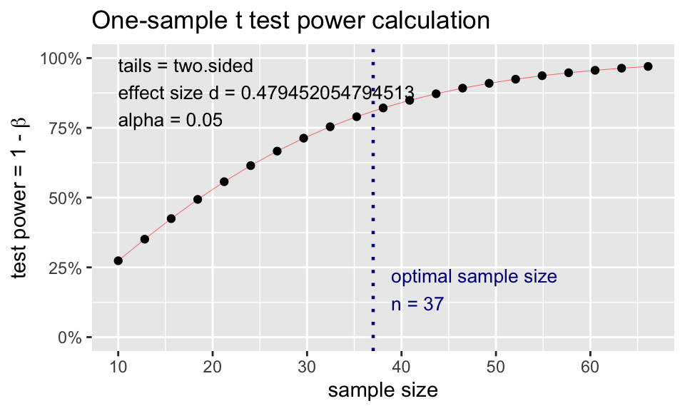
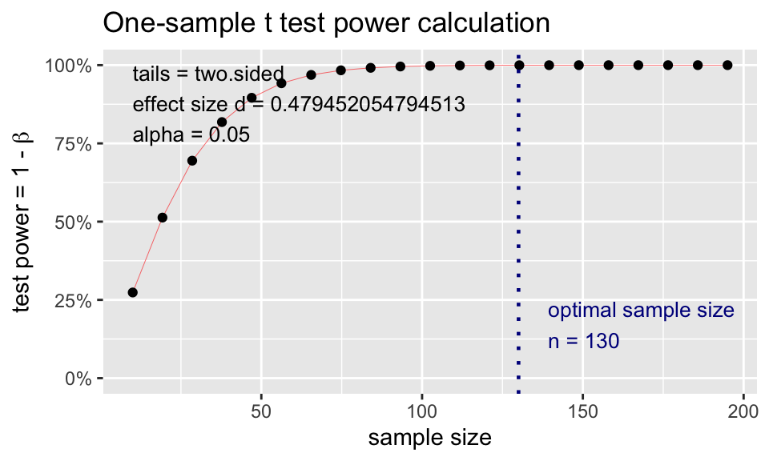
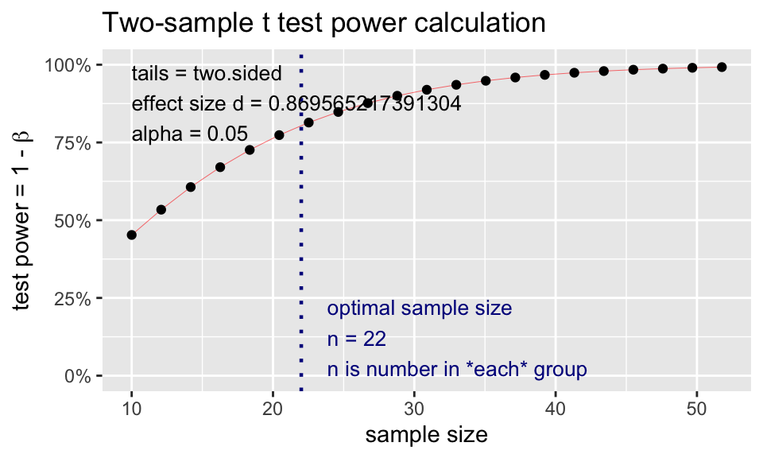

# run these every time you open Rstudio
library(tidyverse)
library(oibiostat)
library(janitor)
library(rstatix)
library(knitr)
library(gtsummary)
library(moderndive)
library(gt)
library(broom) # new-ish
library(here) # new-ish
library(pwr) # NEW!!Day 11: Inference for difference in means from two independent samples and Power (Sections 5.3, 5.4)
BSTA 511/611
Week 7
Load packages
- Packages need to be loaded every time you restart R or render an Qmd file
- You can check whether a package has been loaded or not
- by looking at the Packages tab and
- seeing whether it has been checked off or not
MoRitz’s tip of the day
Add tabbed sections to your html file using tabset.
- You can make subsections appear as different tabs in your html file.
- This is the first tab.
- It was created by adding
::: panel-tabsetright above the subsection### First tab(see the code file). - Look up to the right of where it says “First tab,” and you will see a second tab with the creative name “Second tab.”
- If you are viewing the html output of this file, you can click on the different tabs to see what’s in them.
- To stop new tabs from being created, close off the original
::: panel-tabsetcommand with:::at the end.- In the code file, you will see the
:::at the end of the### Read up on tabsetstab.
- In the code file, you will see the
- Welcome to the second tab!

- You can read up more about creating tabs at
If you are reading the source code file, the next line contains :::, which closes the tabsets.
Where are we?
CI’s and hypothesis tests for different scenarios:
\[\text{point estimate} \pm z^*(or~t^*)\cdot SE,~~\text{test stat} = \frac{\text{point estimate}-\text{null value}}{SE}\]
| Day | Book | Population parameter |
Symbol | Point estimate | Symbol | SE |
|---|---|---|---|---|---|---|
| 10 | 5.1 | Pop mean | \(\mu\) | Sample mean | \(\bar{x}\) | \(\frac{s}{\sqrt{n}}\) |
| 10 | 5.2 | Pop mean of paired diff | \(\mu_d\) or \(\delta\) | Sample mean of paired diff | \(\bar{x}_{d}\) | \(\frac{s_d}{\sqrt{n}}\) |
| 11 | 5.3 | Diff in pop means |
\(\mu_1-\mu_2\) | Diff in sample means |
\(\bar{x}_1 - \bar{x}_2\) | ??? |
| 12 | 8.1 | Pop proportion | \(p\) | Sample prop | \(\widehat{p}\) | |
| 12 | 8.2 | Diff in pop proportions |
\(p_1-p_2\) | Diff in sample proportions |
\(\widehat{p}_1-\widehat{p}_2\) |
Goals for today (Section 5.3)
- Statistical inference for difference in means from 2 independent samples
What are \(H_0\) and \(H_a\)?
What is the SE for \(\bar{x}_1 - \bar{x}_2\)?
Hypothesis test
Confidence Interval
Run test in R - using long vs. wide data
Satterthwaite’s df
Pooled SD
Examples of designs with two independent samples
Any study where participants are randomized to a control and treatment group
Study where create two groups based on whether they were exposed or not to some condition (can be observational)
Book: “Does treatment using embryonic stem cells (ESCs) help improve heart function following a heart attack?”
Book: “Is there evidence that newborns from mothers who smoke have a different average birth weight than newborns from mothers who do not smoke?”
The key is that the data from the two groups are independent of each other.
Steps in a Hypothesis Test
Set the level of significance \(\alpha\)
Specify the null ( \(H_0\) ) and alternative ( \(H_A\) ) hypotheses
- In symbols
- In words
- Alternative: one- or two-sided?
Calculate the test statistic.
Calculate the p-value based on the observed test statistic and its sampling distribution
Write a conclusion to the hypothesis test
- Do we reject or fail to reject \(H_0\)?
- Write a conclusion in the context of the problem
Does caffeine increase finger taps/min (on average)?
Study Design:
- 20 male college students students were trained to tap their fingers at a rapid rate.
- Each then drank 2 cups of coffee (double-blind)
- Control group: decaf
- Caffeine group: ~ 200 mg caffeine
- After 2 hours, students were tested.
- Taps/minute recorded
Hand, David J.; Daly, Fergus; McConway, K.; Lunn, D. and Ostrowski, E. (1993). A handbook of small data sets. London, U.K.: Chapman and Hall.
- Load the data from the csv file
CaffeineTaps.csv - The code below is for when the data file is in a folder called
datathat is in your R project folder (your working directory)
CaffTaps <- read_csv(here::here("data", "CaffeineTaps.csv"))
glimpse(CaffTaps)Rows: 20
Columns: 2
$ Taps <dbl> 246, 248, 250, 252, 248, 250, 246, 248, 245, 250, 242, 245, 244,…
$ Group <chr> "Caffeine", "Caffeine", "Caffeine", "Caffeine", "Caffeine", "Caf…EDA: Explore the finger taps data
Dotplot of taps/minute stratified by group
ggplot(CaffTaps, aes(x=Taps)) +
geom_dotplot() +
facet_wrap(vars(Group), ncol=1)
Summary statistics stratified by group
# get_summary_stats() from rstatix package
sumstats <- CaffTaps %>%
group_by(Group) %>%
get_summary_stats(type = "mean_sd")
sumstats %>% gt()| Group | variable | n | mean | sd |
|---|---|---|---|---|
| Caffeine | Taps | 10 | 248.3 | 2.214 |
| NoCaffeine | Taps | 10 | 244.8 | 2.394 |
diff(sumstats$mean)[1] -3.5Step 2: Null & Alternative Hypotheses
- Question: Is there evidence to support that drinking caffeine increases the number of finger taps/min?
Null and alternative hypotheses in words
Include as much context as possible
\(H_0\): The population difference in mean finger taps/min between the caffeine and control groups is …
\(H_A\): The population difference in mean finger taps/min between the caffeine and control groups is …
Null and alternative hypotheses in symbols
\[\begin{align} H_0:& \mu_{caff} - \mu_{ctrl} = \\ H_A:& \mu_{caff} - \mu_{ctrl} \\ \end{align}\]
Step 3: Test statistic (part 1)
Recall that in general the test statistic has the form:
\[\text{test stat} = \frac{\text{point estimate}-\text{null value}}{SE}\] Thus, for a two sample independent means test, we have:
\[\text{test statistic} = \frac{\bar{x}_1 - \bar{x}_2 - 0}{SE_{\bar{x}_1 - \bar{x}_2}}\]
- What is the formula for \(SE_{\bar{x}_1 - \bar{x}_2}\)?
- What is the probability distribution of the test statistic?
- What assumptions need to be satisfied?
What distribution does \(\bar{X}_1 - \bar{X}_2\) have?
Let \(\bar{X}_1\) and \(\bar{X}_2\) be the means of random samples from two independent groups, with parameters:
| Group 1 | Group 2 | |
|---|---|---|
| sample size | \(n_1\) | \(n_2\) |
| pop mean | \(\mu_1\) | \(\mu_2\) |
| pop sd | \(\sigma_1\) | \(\sigma_2\) |
Some theoretical statistics:
- If \(\bar{X}_1\) and \(\bar{X}_2\) are independent normal r.v.’s, then \(\bar{X}_1 - \bar{X}_2\) is also normal
- What is the mean of \(\bar{X}_1 - \bar{X}_2\)?
\[E[\bar{X}_1 - \bar{X}_2] = E[\bar{X}_1] - E[\bar{X}_2] = \mu_1-\mu_2\]
- What is the standard deviation of \(\bar{X}_1 - \bar{X}_2\)?
\[Var(\bar{X}_1 - \bar{X}_2) = Var(\bar{X}_1) + Var(\bar{X}_2) = \frac{\sigma_1^2}{n_1}+\frac{\sigma_2^2}{n_2} \\ SD(\bar{X}_1 - \bar{X}_2) = \sqrt{\frac{\sigma_1^2}{n_1}+\frac{\sigma_2^2}{n_2}}\]
Step 3: Test statistic (part 2)
\[ t_{\bar{x}_1 - \bar{x}_2} = \frac{\bar{x}_1 - \bar{x}_2 - 0}{\sqrt{\frac{s_1^2}{n_1} + \frac{s_2^2}{n_2}}} \]
\(\bar{x}_1, \bar{x}_2\) are the sample means
\(\mu_0=0\) is the mean value specified in \(H_0\)
\(s_1, s_2\) are the sample SD’s
\(n_1, n_2\) are the sample sizes
Statistical theory tells us that \(t_{\bar{x}_1 - \bar{x}_2}\) follows a student’s t-distribution with
- \(df \approx\) smaller of \(n_1-1\) and \(n_2-1\)
- this is a conservative estimate (smaller than actual \(df\) )
Assumptions:
- Independent observations & samples
- The observations were collected independently.
- In particular, the observations from the two groups were not paired in any meaningful way.
- Approximately normal samples or big n’s
- The distributions of the samples should be approximately normal
- or both their sample sizes should be at least 30.
Step 3: Test statistic (part 3)
| Group | variable | n | mean | sd |
|---|---|---|---|---|
| Caffeine | Taps | 10 | 248.3 | 2.214 |
| NoCaffeine | Taps | 10 | 244.8 | 2.394 |
\[ \text{test statistic} = t_{\bar{x}_1 - \bar{x}_2} = \frac{\bar{x}_1 - \bar{x}_2 - 0}{\sqrt{\frac{s_1^2}{n_1} + \frac{s_2^2}{n_2}}} \]
Based on the value of the test statistic, do you think we are going to reject or fail to reject \(H_0\)?
Step “3b”: Assumptions satisfied?
Assumptions:
- Independent observations & samples
- The observations were collected independently.
- In particular, the observations from the two groups were not paired in any meaningful way.
- Approximately normal samples or big n’s
- The distributions of the samples should be approximately normal
- or both their sample sizes should be at least 30.
ggplot(CaffTaps, aes(x=Taps)) +
geom_dotplot() +
facet_wrap(vars(Group), ncol=1)
The p-value is the probability of obtaining a test statistic just as extreme or more extreme than the observed test statistic assuming the null hypothesis \(H_0\) is true.
# specify upper and lower bounds of shaded region below
mu <- 0
std <- se
# The following figure is only an approximation of the
# sampling distribution since I used a normal instead
# of t-distribution to make it.
ggplot(data.frame(x = c(mu-5*std, mu+5*std)), aes(x = x)) +
stat_function(fun = dnorm,
args = list(mean = mu, sd = std)) +
scale_y_continuous(breaks = NULL) +
scale_x_continuous(breaks=c(mu, mu - 1*(1:5), mu + 1*(1:5))) +
theme(axis.text.x=element_text(angle = -30, hjust = 0)) +
labs(y = "",
x = "difference in means",
title = "Sampling distribution of difference in means") +
geom_vline(xintercept = c(diff_x),
color = "red")
ggplot(data = data.frame(x = c(-5, 5)), aes(x)) +
stat_function(fun = dt, args = list(df = min(n1 -1, n2-1))) +
ylab("") +
xlab("t-dist with df = 9") +
scale_y_continuous(breaks = NULL) +
scale_x_continuous(breaks=c(mu, mu - (1:5), mu + (1:5))) +
geom_vline(xintercept = c(tstat),
color = "red")
Calculate the p-value:
Step 5: Conclusion to hypothesis test
\[\begin{align} H_0:& \mu_{caff} - \mu_{ctrl} = 0\\ H_A:& \mu_{caff} - \mu_{ctrl} > 0\\ \end{align}\]
- Recall the \(p\)-value = 0.00397
- Use \(\alpha\) = 0.05.
- Do we reject or fail to reject \(H_0\)?
Conclusion statement:
- Stats class conclusion
- There is sufficient evidence that the (population) difference in mean finger taps/min with vs. without caffeine is greater than 0 ( \(p\)-value = 0.004).
- More realistic manuscript conclusion:
- The mean finger taps/min were 244.8 (SD = 2.4) and 248.3 (SD = 2.2) for the control and caffeine groups, and the increase of 3.5 taps/min was statistically significant ( \(p\)-value = 0.004).
95% CI for the mean difference in cholesterol levels
| Group | variable | n | mean | sd |
|---|---|---|---|---|
| Caffeine | Taps | 10 | 248.3 | 2.214 |
| NoCaffeine | Taps | 10 | 244.8 | 2.394 |
CI for \(\mu_{caff} - \mu_{ctrl}\):
\[\bar{x}_{caff} - \bar{x}_{ctrl} \pm t^* \cdot \sqrt{\frac{s_{caff}^2}{n_{caff}}+\frac{s_{ctrl}^2}{n_{ctrl}}}\]
Interpretation:
We are 95% confident that the (population) difference in mean finger taps/min between the caffeine and control groups is between 1.167 mg/dL and 5.833 mg/dL.
- Based on the CI, is there evidence that drinking caffeine made a difference in finger taps/min? Why or why not?
R
R: 2-sample t-test (with long data)
- The
CaffTapsdata are in a long format, meaning that- all of the outcome values are in one column and
- another column indicates which group the values are from
- This is a common format for data from multiple samples, especially if the sample sizes are different.
(Taps_2ttest <- t.test(formula = Taps ~ Group, alternative = "greater", data = CaffTaps))
Welch Two Sample t-test
data: Taps by Group
t = 3.3942, df = 17.89, p-value = 0.001628
alternative hypothesis: true difference in means between group Caffeine and group NoCaffeine is greater than 0
95 percent confidence interval:
1.711272 Inf
sample estimates:
mean in group Caffeine mean in group NoCaffeine
248.3 244.8 tidy the t.test output
# use tidy command from broom package for briefer output that's a tibble
tidy(Taps_2ttest) %>% gt()| estimate | estimate1 | estimate2 | statistic | p.value | parameter | conf.low | conf.high | method | alternative |
|---|---|---|---|---|---|---|---|---|---|
| 3.5 | 248.3 | 244.8 | 3.394168 | 0.001627703 | 17.89012 | 1.711272 | Inf | Welch Two Sample t-test | greater |
- Pull the p-value:
tidy(Taps_2ttest)$p.value # we can pull specific values from the tidy output[1] 0.001627703R: 2-sample t-test (with wide data)
# make CaffTaps data wide: pivot_wider needs an ID column so that it
# knows how to "match" values from the Caffeine and NoCaffeine groups
CaffTaps_wide <- CaffTaps %>%
mutate(id = rep(1:10, 2)) %>% # "fake" IDs for pivot_wider step
pivot_wider(names_from = "Group",
values_from = "Taps")
glimpse(CaffTaps_wide)Rows: 10
Columns: 3
$ id <int> 1, 2, 3, 4, 5, 6, 7, 8, 9, 10
$ Caffeine <dbl> 246, 248, 250, 252, 248, 250, 246, 248, 245, 250
$ NoCaffeine <dbl> 242, 245, 244, 248, 247, 248, 242, 244, 246, 242t.test(x = CaffTaps_wide$Caffeine, y = CaffTaps_wide$NoCaffeine, alternative = "greater") %>%
tidy() %>% gt()| estimate | estimate1 | estimate2 | statistic | p.value | parameter | conf.low | conf.high | method | alternative |
|---|---|---|---|---|---|---|---|---|---|
| 3.5 | 248.3 | 244.8 | 3.394168 | 0.001627703 | 17.89012 | 1.711272 | Inf | Welch Two Sample t-test | greater |
Why are the df’s in the R output different?
From many slides ago:
- Statistical theory tells us that \(t_{\bar{x}_1 - \bar{x}_2}\) follows a student’s t-distribution with
- \(df \approx\) smaller of \(n_1-1\) and \(n_2-1\)
- this is a conservative estimate (smaller than actual \(df\) )
The actual degrees of freedom are calculated using Satterthwaite’s method:
\[\nu = \frac{[ (s_1^2/n_1) + (s_2^2/n_2) ]^2} {(s_1^2/n_1)^2/(n_1 - 1) + (s_2^2/n_2)^2/(n_2-1) } = \frac{ [ SE_1^2 + SE_2^2 ]^2}{ SE_1^4/df_1 + SE_2^4/df_2 }\]
Verify the p-value in the R output using \(\nu\) = 17.89012:
pt(3.3942, df = 17.89012, lower.tail = FALSE)[1] 0.001627588Pooled standard deviation estimate
Sometimes we have reasons to believe that the population SD’s from the two groups are equal, such as when randomizing participants to two groups
In this case we can use a pooled SD:
\[s_{pooled}^2 = \frac{s_1^2 (n_1-1) + s_2^2 (n_2-1)}{n_1 + n_2 - 2}\] where
\(n_1\), \(n_2\) are the sample sizes, and
\(s_1\), \(s_2\) are the sample standard deviations
of the two groups
We use the pooled SD instead of \(s_1^2\) and \(s_2^2\) when calculating the standard error
\[SE = \sqrt{\frac{s_{pooled}^2}{n_1} + \frac{s_{pooled}^2}{n_2}}= s_{pooled}\sqrt{\frac{1}{n_1} + \frac{1}{n_2}}\]
Test statistic with pooled SD:
\[t_{\bar{x}_1 - \bar{x}_2} = \frac{\bar{x}_1 - \bar{x}_2 -0}{s_{pooled}\sqrt{\frac{1}{n_1} + \frac{1}{n_2}}}\]
CI with pooled SD:
\[(\bar{x}_1 - \bar{x}_2) \pm t^{\star} \cdot s_{pooled} \sqrt{\frac{1}{n_1} + \frac{1}{n_2}}\]
- The \(t\) distribution degrees of freedom are now: \[df = (n_1 - 1) + (n_2 - 1) = n_1 + n_2 - 2.\]
R: 2-sample t-test with pooled SD
# t-test with pooled SD
t.test(formula = Taps ~ Group, alternative = "greater",
var.equal = TRUE, # pooled SD
data = CaffTaps) %>% tidy() %>% gt()| estimate | estimate1 | estimate2 | statistic | p.value | parameter | conf.low | conf.high | method | alternative |
|---|---|---|---|---|---|---|---|---|---|
| 3.5 | 248.3 | 244.8 | 3.394168 | 0.001616497 | 18 | 1.711867 | Inf | Two Sample t-test | greater |
# t-test without pooled SD
t.test(formula = Taps ~ Group, alternative = "greater",
var.equal = FALSE, # default, NOT pooled SD
data = CaffTaps) %>% tidy() %>% gt()| estimate | estimate1 | estimate2 | statistic | p.value | parameter | conf.low | conf.high | method | alternative |
|---|---|---|---|---|---|---|---|---|---|
| 3.5 | 248.3 | 244.8 | 3.394168 | 0.001627703 | 17.89012 | 1.711272 | Inf | Welch Two Sample t-test | greater |
Similar output in this case - why??
What’s next?
CI’s and hypothesis tests for different scenarios:
\[\text{point estimate} \pm z^*(or~t^*)\cdot SE,~~\text{test stat} = \frac{\text{point estimate}-\text{null value}}{SE}\]
| Day | Book | Population parameter |
Symbol | Point estimate | Symbol | SE |
|---|---|---|---|---|---|---|
| 10 | 5.1 | Pop mean | \(\mu\) | Sample mean | \(\bar{x}\) | \(\frac{s}{\sqrt{n}}\) |
| 10 | 5.2 | Pop mean of paired diff | \(\mu_d\) or \(\delta\) | Sample mean of paired diff | \(\bar{x}_{d}\) | \(\frac{s_d}{\sqrt{n}}\) |
| 11 | 5.3 | Diff in pop means |
\(\mu_1-\mu_2\) | Diff in sample means |
\(\bar{x}_1 - \bar{x}_2\) | \(\sqrt{\frac{s_1^2}{n_1} + \frac{s_2^2}{n_2}}\) or pooled |
| 12 | 8.1 | Pop proportion | \(p\) | Sample prop | \(\widehat{p}\) | ??? |
| 12 | 8.2 | Diff in pop proportions |
\(p_1-p_2\) | Diff in sample proportions |
\(\widehat{p}_1-\widehat{p}_2\) | ??? |
Power and sample size calculations
- Critical values & rejection region
- Type I & II errors
- Power
- How to calculate sample size needed for a study?
- Materials are from
- Section 4.3.4 Decision errors
- Section 5.4 Power calculations for a difference of means
- plus notes
Critical values
- Critical values are the cutoff values that determine whether a test statistic is statistically significant or not.

If a test statistic is greater in absolute value than the critical value, we reject \(H_0\)
Critical values are determined by
- the significance level \(\alpha\),
- whether a test is 1- or 2-sided, &
- the probability distribution being used to calculate the p-value (such as normal or t-distribution).
The critical values in the figure should look very familiar!
- Where have we used these before?
How can we calculate the critical values using R?
Rejection region
- If the absolute value of the test statistic is greater than the critical value, we reject \(H_0\)
- In this case the test statistic is in the rejection region.
- Otherwise it’s in the nonrejection region.
- What do rejection regions look like for 2-sided vs. 1-sided tests?
Hypothesis Testing “Errors”
Justice system analogy
Type I and Type II Errors - Making Mistakes in the Justice System
Type I & II Errors
- \(\alpha\) = probability of making a Type I error
- This is the significance level (usually 0.05)
- Set before study starts
- \(\beta\) = probability of making a Type II error
- Ideally we want
- small Type I & II errors and
- big power

Applet for visualizing Type I & II errors and power: https://rpsychologist.com/d3/NHST/
Relationship between Type I & II errors
- Type I vs. Type II error
- Decreasing P(Type I error) leads to
- increasing P(Type II error)
- We typically keep P(Type I error) = \(\alpha\) set to 0.05
- Decreasing P(Type I error) leads to
Try out the applet at https://rpsychologist.com/d3/NHST/
Relationship between Type II errors and power
Also called the
- true positive rate,
- probability of detection, or
- the sensitivity of a test
Power vs. Type II error
Power = 1 - P(Type II error) = 1 - \(\beta\)
Thus as \(\beta\) = P(Type II error) decreases, the power increases
P(Type II error) decreases as the mean of the alternative population gets further away from the mean of the null population (effect size gets bigger).
Typically want at least 80% power; 90% power is good
Example calculating power
- Suppose the mean of the null population is 0 ( \(H_0: \mu=0\) ) with standard error 1
- Find the power of a 2-sided test if the actual \(\mu=3\), assuming the SE doesn’t change.
Power = \(P(\)Reject \(H_0\) when alternative pop is \(N(3,1))\)
When \(\alpha\) = 0.05, we reject \(H_0\) when the test statistic z is at least 1.96
Thus for \(X\sim N(3,1)\) we need to calculate \(P(X \le -1.96) + P(X \ge 1.96)\) :
# left tail + right tail:
pnorm(-1.96, mean=3, sd=1, lower.tail=TRUE) + pnorm(1.96, mean=3, sd=1, lower.tail=FALSE)[1] 0.8508304The left tail probability pnorm(-1.96, mean=3, sd=1, lower.tail=TRUE) is essentially 0 in this case.
- Note that this power calculation specified the value of the SE instead of the standard deviation and sample size \(n\) individually.
Sample size calculation for testing one mean
- Recall in our body temperature example that \(\mu_0=98.6\) °F and \(\bar{x}= 98.25\) °F.
- The p-value from the hypothesis test was highly significant (very small).
- What would the sample size \(n\) need to be for 80% power?
- Calculate \(n\),
- given \(\alpha\), power ( \(1-\beta\) ), “true” alternative mean \(\mu\), and null \(\mu_0\),
- assuming the test statistic is normal (instead of t-distribution):
\[n=\left(s\frac{z_{1-\alpha/2}+z_{1-\beta}}{\mu-\mu_0}\right)^2\]
mu <- 98.25
mu0 <- 98.6
sd <- 0.73
alpha <- 0.05
beta <- 0.20
n <- (sd*(qnorm(1-alpha/2) + qnorm(1-beta)) / (mu-mu0))^2
n[1] 34.14423ceiling(n) # always round UP to the next highest integer [1] 35We would only need a sample size of 35! However, this is an under-estimate since we used the normal instead of t-distribution.
See http://powerandsamplesize.com/Calculators/Test-1-Mean/1-Sample-Equality.
Power calculation for testing one mean
Conversely, we can calculate how much power we had in our example given the sample size of 130.
- Calculate power,
- given \(\alpha\), \(n\), “true” alternative mean \(\mu\), and null \(\mu_0\),
- assuming the test statistic is normal (instead of t-distribution)
\[1-\beta= \Phi\left(z-z_{1-\alpha/2}\right)+\Phi\left(-z-z_{1-\alpha/2}\right) \quad ,\quad z=\frac{\mu-\mu_0}{s/\sqrt{n}}\]
mu <- 98.25; mu0 <- 98.6; sd <- 0.73; alpha <- 0.05; n <- 130
(z <- (mu-mu0) / (sd/sqrt(n)) )[1] -5.466595(Power <- pnorm(z-qnorm(1-alpha/2)) + pnorm(-z-qnorm(1-alpha/2)))[1] 0.9997731If the population mean is 98.2 instead of 98.6, we have a 99.98% chance of correctly rejecting \(H_0\) when the sample size is 130.
We would say this was over powered.
R package pwr for power analyses
- Use
pwr.t.testfor both one- and two-sample t-tests.
- Specify all parameters except for the one being solved for.
pwr.t.test(n = NULL, d = NULL, sig.level = 0.05, power = NULL,
type = c("two.sample", "one.sample", "paired"),
alternative = c("two.sided", "less", "greater"))
d is Cohen’s d effect size: small = 0.2, medium = 0.5, large = 0.8
One-sample test (or paired t-test):
\[d = \frac{\mu-\mu_0}{s}\]
Two-sample test (independent):
\[d = \frac{\bar{x}_1 - \bar{x}_2}{s_{pooled}}\]
\(\bar{x}_1 - \bar{x}_2\) is the difference in means between the two groups that one would want to be able to detect as being significant,
\(s_{pooled}\) is the pooled SD between the two groups - often assume have same sd in each group
R package
pwrfor basic statistical tests
pwr: sample size for one mean test
pwr.t.test(n = NULL, d = NULL, sig.level = 0.05, power = NULL,
type = c("two.sample", "one.sample", "paired"), alternative = c("two.sided", "less", "greater"))
dis Cohen’s d effect size: \(d = \frac{\mu-\mu_0}{s}\)
Specify all parameters except for the sample size:
library(pwr)
t.n <- pwr.t.test(
d = (98.6-98.25)/0.73,
sig.level = 0.05,
power = 0.80,
type = "one.sample")
t.n
One-sample t test power calculation
n = 36.11196
d = 0.4794521
sig.level = 0.05
power = 0.8
alternative = two.sidedplot(t.n)
pwr: power for one mean test
pwr.t.test(n = NULL, d = NULL, sig.level = 0.05, power = NULL,
type = c("two.sample", "one.sample", "paired"), alternative = c("two.sided", "less", "greater"))
dis Cohen’s d effect size: \(d = \frac{\mu-\mu_0}{s}\)
Specify all parameters except for the power:
t.power <- pwr.t.test(
d = (98.6-98.25)/0.73,
sig.level = 0.05,
# power = 0.80,
n = 130,
type = "one.sample")
t.power
One-sample t test power calculation
n = 130
d = 0.4794521
sig.level = 0.05
power = 0.9997354
alternative = two.sidedplot(t.power)
pwr: Two-sample t-test: sample size
pwr.t.test(n = NULL, d = NULL, sig.level = 0.05, power = NULL,
type = c("two.sample", "one.sample", "paired"), alternative = c("two.sided", "less", "greater"))
dis Cohen’s d effect size: \(d = \frac{\bar{x}_1 - \bar{x}_2}{s_{pooled}}\)
Example: Suppose the data collected for the caffeine taps study were pilot day for a larger study. Investigators want to know what sample size they would need to detect a 2 point difference between the two groups. Assume the SD in both groups is 2.3.
Specify all parameters except for the sample size:
t2.n <- pwr.t.test(
d = 2/2.3,
sig.level = 0.05,
power = 0.80,
type = "two.sample")
t2.n
Two-sample t test power calculation
n = 21.76365
d = 0.8695652
sig.level = 0.05
power = 0.8
alternative = two.sided
NOTE: n is number in *each* groupplot(t2.n)
pwr: Two-sample t-test: power
pwr.t.test(n = NULL, d = NULL, sig.level = 0.05, power = NULL,
type = c("two.sample", "one.sample", "paired"), alternative = c("two.sided", "less", "greater"))
dis Cohen’s d effect size: \(d = \frac{\bar{x}_1 - \bar{x}_2}{s_{pooled}}\)
Example: Suppose the data collected for the caffeine taps study were pilot day for a larger study. Investigators want to know what sample size they would need to detect a 2 point difference between the two groups. Assume the SD in both groups is 2.3.
Specify all parameters except for the power:
t2.power <- pwr.t.test(
d = 2/2.3,
sig.level = 0.05,
# power = 0.80,
n = 22,
type = "two.sample")
t2.power
Two-sample t test power calculation
n = 22
d = 0.8695652
sig.level = 0.05
power = 0.8044288
alternative = two.sided
NOTE: n is number in *each* groupplot(t2.power)What information do we need for a power (or sample size) calculation?
There are 4 pieces of information:
- Level of significance \(\alpha\)
- Usually fixed to 0.05
- Power
- Ideally at least 0.80
- Sample size
- Effect size (expected change)
Given any 3 pieces of information, we can solve for the 4th.
pwr.t.test(
d = (98.6-98.25)/0.73,
sig.level = 0.05,
# power = 0.80,
n=130,
type = "one.sample")
One-sample t test power calculation
n = 130
d = 0.4794521
sig.level = 0.05
power = 0.9997354
alternative = two.sidedMore software for power and sample size calculations: PASS
- PASS is a very powerful (& expensive) software that does power and sample size calculations for many advanced statistical modeling techniques.
- Even if you don’t have access to PASS, their documentation is very good and free online.
- Documentation includes formulas and references.
- PASS documentation for powering means
- One mean, paired means, two independent means
- One-sample t-test documentation: https://www.ncss.com/wp-content/themes/ncss/pdf/Procedures/PASS/One-Sample_T-Tests.pdf
OCTRI-BERD power & sample size presentations
- Power and Sample Size 101
- Presented by Meike Niederhausen; April 13, 2023
- Slides: http://bit.ly/PSS101-BERD-April2023
- Recording
- Power and Sample Size for Clinical Trials: An Introduction
- Presented by Yiyi Chen; Feb 18, 2021
- Slides: http://bit.ly/PSS-ClinicalTrials
- Recording
- Planning a Study with Power and Sample Size Considerations in Mind
- Power and Sample Size Simulations in R